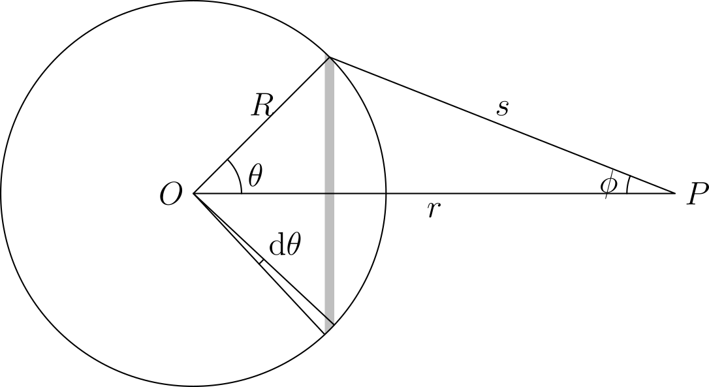

Gravitation
Newton’s law of universal gravitation
Newton’s law of universal gravitation gives the gravitational force between two point masses. If the masses $m_1$ and $m_2$ are separated by a distance $r$, the gravitational force is given by
where $G = 6.67430 × 10^{-11} \mathrm{ m^3 kg^{-1} s^{-2}}$ is the gravitational constant.
The gravitational force between two masses is attractive, i.e. the force exerted on $m_2$ by $m_1$ points in the direction of $m_1$ and vice versa. The magnitude of the force is directly proportional to the each of the masses of the two objects, and inversely proportional to the square of the distance between them. In addition, by Newton’s third law, the gravitational force exerted by $m_1$ on $m_2$ is equal in magnitude and opposite in direction to that exerted by $m_2$ on $m_1$. Using vector notation, we may also write
Barycentric coordinates
In the two-body problem, each object exerts a gravitational force on the other. Both objects orbit about their centre of mass or barycentre
Kepler’s laws of planetary motion
Kepler’s first law
Kepler’s first law states that every planet orbits the Sun in an ellipse, with the Sun at one focus.
More generally, the orbit of an object about another due to gravity adopts a shape known as a conic section, which may be a circle, ellipse, parabola, or hyperbola.
Derivation of Kepler’s first law
To prove Kepler’s first law, it is useful to introduce the concept of the Laplace-Runge-Lenz vector. For a central force $\mathbf{F} = - \frac{k}{r^3} \mathbf{r}$, the Laplace-Runge-Lenz vector is defined as
The vector is conserved in orbital motion of a particle under the influence of such a central force. To derive this vector, we note that
Using the vector triple product identity
we get
Since
then
However, since $\mathbf{L} = \mathbf{r} \times \mathbf{p} = \mathbf{r} \times (m \dot{\mathbf{r}})$,
where $\mathbf{A}$ is a constant vector of integration. Therefore, $\mathbf{A}$ represents the Laplace-Runge-Lenz vector. It is useful to note that $\mathbf{A}$ lies in the same plane as the orbit. This can be seen by rewriting
This produces a linear combination of $\mathbf{r}$ and $\dot{\mathbf{r}}$, both of which lie in the plane of the orbit.
For gravitation, the Laplace-Runge-Lenz vector is
Take the dot product with $\mathbf{r}$ on both sides to get
Using the property $\mathbf{A} \cdot (\mathbf{B} \times \mathbf{C}) = (\mathbf{A} \times \mathbf{B}) \cdot \mathbf{C}$,
Let $\theta$ be the angle between $\mathbf{A}$ and $\mathbf{r}$. Because $\mathbf{L}$ and $\mathbf{A}$ are constants, define $p = \frac{L^2}{GMm^2}$ and $e = \frac{A}{GMm^2}$. Then
This is the equation of a conic section in polar coordinates, with the origin $(0,0)$ as a focus, $e$ the eccentricity of the conic section, and $p$ is the semi-latus rectum. The semi-latus rectum is related to the semi-major axis $a$ by $p = a (1 - e^2)$ for $e < 1$ and $a (e^2 - 1)$ for $e > 1$.
Now, if we consider the dot product of $\mathbf{A}$ with itself, and use the fact that $\mathbf{p}$ and $\mathbf{L} = \mathbf{r} \times \mathbf{p}$ are perpendicular, we can derive an expression for $e$:
where $E = \frac{p^2}{2m} - \frac{GMm}{r}$ is the total energy of the object in orbit, i.e. the sum of its kinetic and gravitational potential energies.
Kepler’s second law
Kepler’s second law states that a line joining a planet and the Sun sweeps out area at a constant rate.
If the distance between the planet and the Sun is $r$, and the position angle of the planet (measured about the Sun from some point in the orbit) is $\theta$, then the rate at which area is swept out is
Derivation of Kepler’s second law
For a test particle of mass $m$ under the gravitational influence of a large mass $M$, the acceleration of the test particle is $\ddot{\mathbf{r}} = - \frac{GM}{r^3}\mathbf{r}$.
We have shown in the previous section that $\mathbf{L} = \mathbf{r} \times \mathbf{p} = m(\mathbf{r} \times \dot{\mathbf{r}})$ is constant for an object moving under the influence of a central force like gravitation. Since $\boldsymbol{\omega} = \frac{\mathbf{r} \times \dot{\mathbf{r}}}{r^2}$,
A simple rearrangement directly leads to Kepler’s second law, which we can now write as
Kepler’s third law
Kepler’s third law states that the square of the period of an orbit is proportional to the cube of the semi-major axis of the orbit.
Equivalently, this can be written as
Evidently, this law is meant to apply to circular and elliptical orbits, where the period is well-defined.
Derivation of Kepler’s third law
This law directly follows from the previous two. The area of an ellipse with semi-major axis $a$, semi-minor axis $b$, and eccentricity $e$ is
Since the rate at which the area of this ellipse is swept out is constant, the period is given by
where we have used the result from the derivation of the second law. Squaring both sides yields
where we have used the properties of the semi-latus rectum $p = \frac{L^2}{GMm^2}$ and $p = a (1 - e^2)$ introduced earlier in the derivation of the first law.
Important results in gravitation
Shell theorem
The shell theorem applies to spherical shells with a uniform mass distribution, and provides us with two important results:
- the gravitational field outside the spherical shell is equivalent to that of a point mass with the same total mass $M$ located at the centre of the shell;
- the gravitational field inside the spherical shell is zero.
Since uniform spheres are made of many layers of spherical shells, we can also arrive at the following results for a uniform sphere of radius $R$:
- the gravitational field outside the sphere is equivalent to that of a point mass with the same total mass $M$ located at the centre of the sphere;
- the gravitational field at a distance $r < R$ from the centre of the sphere is equivalent to that of the part of the sphere located within a radius $r$ from its centre (the spherical shells outside do not contribute).
Derivation of the shell theorem
Consider a point $P$ located a distance $r$ away from (and outside) a spherical shell of radius $R$ and mass $M$ as shown in the figure below. The mass per unit surface area of the shell is $\sigma = \frac{M}{4 \pi R^2}$. We intend to find the gravitational field from the shell at $P$.

At an angle $\theta$ on the shell away from the line $\overline{OP}$, where $O$ is the centre of the shell, there is an infinitesimal circular strip of radius $R \sin{\theta}$ and width $R \mathrm{d}\theta$. Each point on this strip is at a distance $s$ away from $P$. The gravitational force acts at some angle $\phi$ away from the line $\overline{OP}$, but due to symmetry, the net contribution from the circular strip acts along the line of $\overline{OP}$.
The differential gravitational field from a circular strip is given by
Therefore, integrating over the whole sphere:
Hence, the field outside the spherical shell is equivalent to that of a point mass with the same total mass $M$ located at the centre of the shell.
If $P$ is located inside the spherical shell, our limits of integration change, with $s = R - r$ when $\theta = 0$ and $s = R + r$ when $\theta = \pi$ instead. Then
Hence, the gravitational field is zero inside the shell.
Gravitational binding energy of a sphere
The gravitational binding energy of a uniform spherical object is the amount of energy needed to completely separate the components to reduce the gravitational potential to zero. Equivalently, it is the gravitational potential energy change when masses from infinity are assembled to form the spherical object.
Due to the shell theorem, different parts of the spherical object experience different gravitational fields. This complicates the process of calculating the gravitational binding energy of the sphere.
Consider a shell of radius $r < R$ and thickness $\mathrm{d}r$. The mass of this shell is $4 \pi r^2 \rho \mathrm{d}r$. By the shell theorem, the portion of the sphere outside radius $r$ does not contribute to the gravitational field at $r$. Hence, the gravitational potential energy of this shell only comes from the portion of the sphere within radius $r$, and is
Tidal forces
Roche limit
Orbital mechanics
Orbital elements
To completely specify a planet’s orbit and its position, 6 orbital parameters are required, corresponding to the 6 degrees of freedom of the planet (3 degrees each in position and velocity). The typical set of orbital elements for a planet in the solar system are:
- $a$
- the semi-major axis of the orbit;
- $e$
- the eccentricity of the orbit;
- $i$
- the inclination of the orbit, relative to the plane of the ecliptic;
- $\Omega$
- the longitude of the ascending node, relative to the vernal equinox and measured in the plane of the ecliptic;
- $\pi$
- the longitude of the perihelion;
- $L$
- the mean longitude of the planet.
The first five items describe the orbit itself, while the last provides information on where the planet is located in the orbit. Note that the quantities $\pi$ and $L$ are compound angles that are sums of angles measured in two planes:
- $\pi = \Omega + \omega$ where $\omega$ is the argument of perihelion, the angle between the ascending node and the perihelion measured in the plane of the orbit;
- $L = \pi + M = \Omega + \omega + M$ where $M$ is the mean anomaly of the planet measured in the plane of the orbit.
Kepler’s equation
Consider the orbit of a planet $P$ about the star $S$ as shown in the figure below. This orbit has a semi-major axis $a$ and eccentricity $e$. The true anomaly $\nu$ is the angle $QSP$, measured from the periapsis $Q$. The outer dashed circle (with centre $O$) is the auxiliary circle of the orbit, which is a circle with radius equal to the semi-major axis of the orbit. If a line perpendicular to the major axis of the orbit is drawn passing through $P$, this line meets the auxiliary circle at a point $P'$. The angle $QOP'$ is defined as the eccentric anomaly.
The eccentric anomaly is related to the true anomaly by the relation
The distance $r$ between $P$ and $S$ can be calculated using the eccentric anomaly by
Now consider a fictitious planet $R$ that has a circular orbit about $S$ with the same semi-major axis as $P$. Their orbits are shown in the figure below. Both $P$ and $R$ will complete their orbits in the same amount of time. Suppose also that when $P$ is at the periapsis $Q$, $R$ is at the point $Q'$. Then, as $P$ and $R$ move about their orbits, the angle $Q'SR$ describes the mean anomaly $M$ of the planet $P$. $M$ increases linearly with time, but $\nu$ does not (as a consequence of Kepler’s second law).
The eccentric anomaly is related to the mean anomaly by Kepler’s equation, which is
where the angles are given in radians.
Solving for $M$ when $E$ is known is straightforward. However, solving for $E$ given $M$ cannot be done directly. Frequently, iterative methods are used to arrive at an approximate value for $E$.
Vis-viva equation
The vis-viva equation relates the orbital speed of an object to the distance from the central body. It is given by
Derivation of the vis-viva equation
The velocity of the object can be split into radial and tangential components. The radial component is $\frac{\mathrm{d}r}{\mathrm{d}t}$ and the tangential component is $r\frac{\mathrm{d}\theta}{\mathrm{d}t}$.
The radial component is
Since we know $r^2 \frac{\mathrm{d}\theta}{\mathrm{d}t} = \frac{L}{m} = h$,
The tangential component is
Therefore, the overall velocity is
Using the fact that $p = \frac{h^2}{GM}$, and $p = a(1 - e^2)$,